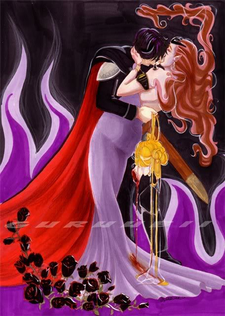

Bishoujo Senshi Sailormoon is the property of Naoko Takeuchi, Kodanshi Comics, and Toei Animation.
Китахара
Кто такой
— Кто такой Мамору? — удивляется Эндимион, когда в бою Сейлормун снова зовет его этим именем.
"Тридцать баллов, булкоголовая! Учись лучше!"
Дурацкий, совершенно дурацкий зеленый пиджак, но он всегда устраивал...
— Мамору?..
— Не знаю никакого Мамору, — кривится Эндимион, бросая красную розу. Он понимает, что не попадёт, и даже не пытается попасть, и досадует на себя за эту мягкость.
Сознания Эндимиона касается голос Королевы — как всегда, нервный. Королева кричит, чтобы Эндимион отступал, впрочем, Королева всегда кричит.
Эндимион раздраженно возводит очи горе и телепортируется.
Мельком он успевает заметить, что глаза Сейлормун полны слез.
Что за глупая кукла.
***
— А кто такой Мамору? — уточняет Эндимион, отталкивая Сейлормун.
Немного не рассчитывает — девушка летит в ближайшее дерево и с размаху ударяется спиной о ствол.
Эндимион даже сочувствует, он-то знает, как
...неприятно считать на себе синяки поутру, не помня, где заработал их накануне; он ведь никогда не пил, никогда не употреблял наркотиков, но эти провалы в памяти таковы, словно есть какая-то другая жизнь у студента университета Джиба...
— Мамору! Ну послушай же меня!
"Отступай, — шепчет невидимая Берилл (она редко понижает голос, и потому этот шепот пугает). — Отступай, Эндимион".
— Прощай, Сейлормун, — пожимает плечами Эндимион; ему лень придумывать отговорку для своего бегства.
Телепортируясь, он улыбается: эта дура снова плачет.
***
— Мамору, ну Мамору же!
Нет, она никогда не перестанет.
Эндимион уверен в этом, потому что
он видел раньше: какой бы глупой ни казалась затея, эта дуреха пройдет весь путь до конца, набьет все возможные шишки, упадет с телебашни, закроет грудью, выплачет все слезы и вывернется наизнанку, лишь бы...
— Мамору!
... продолжал быть.
Эндимион трясет головой и сам, без приказа Берилл, уходит с поля боя.
Разумеется, скорбя о его отступлении, Сейлормун так и заходится душераздирающими рыданиями.
***
— Эндимион.
Он садится; камень под ним холоден.
Берилл смотрит нежно и похотливо, у нее золотые глаза. Ее грудь колышется так, как положено колыхаться роскошной груди Темной Владычицы.
Мамору едва сдерживает улыбку; Кто такой этот Мамору?
Эндимион, не оставляя себе времени на раздумья, обхватывает Берилл за шею и целует. Получается несколько неловко и слишком поспешно, но губы Королевы пухлые и мягкие, и в целом жаловаться не на что.
Эндимион предпочитает действовать, не задавая лишних вопросов.
Особенно — насчет того, почему каждое утро он просыпается у подножия Хранилища Металлии, даже если не помнит, чтобы шел туда вчера. Почему Королева Берилл смотрит на него с такой тревогой, почему Металлия урчит так сыто и глумливо, словно Эндимион тут не свой среди своих, а...
Откуда эта пустота в голове.
И кто такой этот...
***
— Мамору!
Эндимион не выдерживает и бьет глупую девчонку по лицу.
Картины стоят в строгой очереди, не толпясь, по ранжиру: зал игровых автоматов, телебашня, университет, подработка в конторе, зал игровых авто-, телеба-, униве-...
Сейлормун трудно назвать красивой, по крайней мере, Эндимион никогда не был падок на недорослей с глупыми прическами, но другой внутри него думает иначе, и этого другого зовут...
Эндимион возвращается к Берилл и, ничего не объясняя, до осатанения целует ей руки — руки взрослой злой женщины, руки Королевы.
Если бы Берилл была не Берилл, она бы наверняка спросила, какого черта он себе позволяет.
***
Эндимион пытается нащупать нити своего прошлого, но не может. Где он играл в детстве?
Как выглядела его мать?
В каком году он родился?
Где он научился военному делу, кто вручил ему погоны Главнокомандующего?
И — пустота, абсолютная, как мощь Металлии.
А потом сразу — рыдающая Сейлормун, ее распухший от слез красный нос и бесконечное — "Мамору, Мамору!"
Эндимион радуется всякий раз, когда Берилл зовет его отдохнуть у подножия Хранилища.
Он просыпается обновленный и пустой, совершенно пустой, словно пережил лоботомию (и ни о чем крамольном не думает, пока не осознает, что неоткуда ему знать слово "лоботомия", и тогда Мамору снова начинает тихонько потешаться над Эндимионом).
***
— Эй, Кунсайт.
Последний Лорд останавливается, но не оборачивается, красноватый свет придает его волосам неприятный бурый оттенок.
— Слушаю тебя, Эндимион.
— Мне нужна твоя помощь.
— Не шути так, — Кунсайт и не думает повернуться. Его спина – прямая, белоснежная — тронута кровавыми бликами, как будто Кунсайт был несколько раз ранен. И она излучает ненависть с такой силой, какая только доступна демонической спине.
Мамору смеется.
Эндимион кривится.
— Небольшая помощь, Кунсайт. Забудем о разногласиях, мы же на одной стороне.
— Да ну?
Эндимион позволяет себе легкую улыбку, зная, что Кунсайт ее почувствует.
— По крайней мере, в перспективе это будет некоторый... реванш.
Кунсайт ведь только делает вид, что не винит Берилл. Ему проще ненавидеть Эндимона, потому что отомстить Берилл — недостижимая цель.
— Говори, — Кунсайт не делает ни движения, но Эндимион понимает, что выиграл.
— Расскажи мне о Многомерном Хаосе, — просит он (поспешней, чем следовало бы).
Впрочем, Кунсайт не замечает (или не считает нужным показать, что заметил):
— И все?
— Пока — всё. Это путешествия во времени?
— Не совсем, — говорит Кунсайт. — Путешествия по вероятностям. Власть несбывшегося. Вещи, которые были — и те, которых не было, но они могли случиться. И те, которых быть не могло.
Он запинается.
— В чем подвох? — нельзя, нельзя упускать шанс!
— Можно застрять и никогда не вернуться. Твое тело будет лежать здесь, как овощ. Ты будешь пускать слюни, пока твое сознание будет вкушать меда с гуриями, если ты меня понимаешь.
Мамору хихикает, Эндимион досадливо отмахивается.
Вот как, думает он. Потому Кунсайт сам не решается отдаться власти несбывшегося — это ведь так недостойно.
Гордый ублюдок.
— Я предлагаю сделку, — говорит Эндимион. Плечи Кунсайта ощутимо напрягаются. — Ты оправляешь меня в...
— И всего! — Кунсайт, наконец, оборачивается — и Эндимион невольно отшатывается, столько ярости в глазах Лорда. В этот момент Мамору кажется, что Кунсайт сейчас разорвет его на месте. — Тогда полетел! Полетел, урод! Лети, тварь!
Чернота поглощает Эндимиона. Мимо проносятся осколки времени, циферблаты часов, предметы мебели (табуреты и оттоманки), локоны чьих-то волос; мигает на недостижимом горизонте огромный глаз, шумят пальмы, песок, море, темные своды пещеры нависают над Эндимионом; этот красный свет, и много еще чего, он читал о таких перемещениях в фантастических книгах, как глупо, когда это он мог читать о таком, если не в состоянии вспомнить даже, где учился военному делу?
— Мамору!
Это главный зал Королевства, определенно, главный зал.
Сейлормун стоит напротив. Прижимает к отнюдь не впечатляющему бюсту жезл с Серебряным Кристаллом.
— Я пришла за тобой, Мамору!
Терпение Эндимиона лопается, как поверженный йома, и он обнажает меч.
С него достаточно.
***
— Это вам, Королева, — он прижимает Берилл к себе — она охает и смеется (немного вульгарный смех, но Эндимиону нравится) — и долго, со вкусом целует, зарываясь руками в ее жесткие вьющиеся волосы.
Губы у Берилл... такие же, как всегда.
— Какой нормальный человек во время поцелуя ищет определения к губам возлюбленной, — ехидничает Мамору.
— Иди к черту, то ведь возлюбленной, — отвечает Эндимион — и застывает.
Ах ты!..
— Что-то не так? — ожидаемо интересуется Берилл. — Ах, она же мне все платье закапала!..
Эндимион не совсем понимает, что именно Берилл имеет в виду: кровь, натекшую на ее юбку с отрубленной головы Сейлормун (Мамору все еще держит эту голову за волосы свободной рукой), или эти ее невинные благословенные слезы.
Дуреха оплакивала его до последнего.
— Пойдем, Эндимион, отдохнем у Хранилища Металлии, — Берилл увлекает его за собой, и Эндимион, уронив ненужную голову на пол, идет.
***
Мир накрывает тьма —
***
— ...Эндимион, — говорит Берилл. Склоняется к нему и целует в лоб.
Эндимион дико озирается, впрочем, не поднимаясь с каменного пола. Он видит стоящего на коленях Кунсайта.
— Эй, Кунсайт, — окликает его Эндимион. — Ты вернул меня?..
Кунсайт тонко, ядовито улыбается и опускает голову.
...голова не удерживается на шее и падает с плеч, и это вовсе не голова Кунсайта – откуда, право, у Кунсайта взяться золотым волосам и удивленным синим глазам...
Берилл не говорит ничего, только с силой вдавливает Эндимиона обратно, в силовое поле Металлии.
Отключаясь,
Мамору думает о тридцати баллах за тест по английскому, о подработке, университете, многомерном хаосе, лоботомии, постоянно ревущей идиотке, красных розах, провалах в памяти, провалах в...
...не факт, кто выиграл от их несостоявшейся сделки с Кунсайтом; не факт, что сделка не состоялась.
Мир накрывает тьма, и во тьме имена пропадают, и пропадает необходимость различать пространства и вероятности, и отступают воспоминания.
Написано в качестве текста к иллюстрации (художник guruubii):
